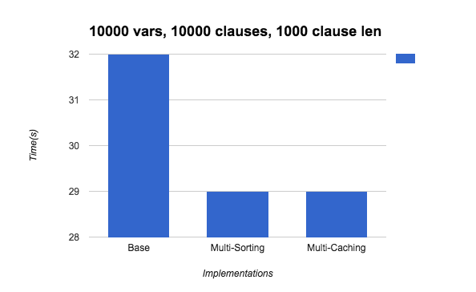
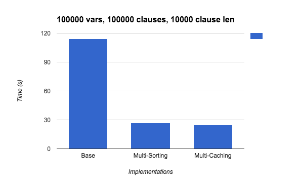

Final Write-Up
Summary
We implemented a parallel SAT solver on the Andrew Unix machines capable of accepting any number of variables, clauses, and clause length. Our parallel implementation proved to be faster than our serial version, and we also created a random SAT expression generator to test large inputs quickly. We ultimately achieved a 4-5x speedup on our largest graph containing 100,000 variables and 100,000 clauses with a maximum clause length of 10,000.
Background
The k-SAT problem involves taking an expression in conjunctive normal form (CNF) and determining if it is possible to assign boolean values to every variable such that the CNF evaluates to true. For example, the expression ((x1 or ~x2) and (x3 or x4)) is satisfiable because we can assume all 4 literals to true, and the CNF will evaluate to true, but the expression ((x1 or ~x2) and (x2) and (~x1)) is not satisfiable because there is no assignment of boolean values that will make this CNF evaluate to true.
Solving the k-SAT problem is a common NP-complete problem, and brute force algorithms normally run in O(2^n) time, although simplifications can be made. The entire problem space is modeled as a decision tree, where each node splits into two more children by considering both true or false values for a specific variable.
We created a brute-force algorithm that attempts every single possible solution to an input SAT expression. We specify that an input SAT expression must consist of variables enumerated from x1, x2, x3, etc., and the negations of variables to create other literals are also valid. Our output will specify whether the input expression is satisfiable (in which case the satisfiable solution/s will be outputted) or whether the input expression has no solution (and isn’t satisfiable). We believe that in the sequential version, the computationally expensive operations lie in the sheer number of possible solutions that must be attempted, which is upper-bounded by 2^num_vars each time, where num_vars is the number of variables in the input expression.
After this initial brute-force attempt, we decided to look through some algorithms specifically targeted towards solving SAT expressions. We landed on the Davis-Putnam-Logemann-Loveland (DPLL) algorithm. The DPLL algorithm describes a recursive strategy to brute force every possible solution but also eliminate any definitive clauses and simplify the expression further so that some paths can be ruled out. Specifically, the algorithm assigns the first variable (which we’ll call x1) a value of true and transforms the SAT expression by getting rid of any clauses with x1 (since that entire clause must evaluate to true) and eliminating ~x1 (negation of x1) within any other clauses. It recurses on the remaining variables by doing the same thing for x2, etc. At the very end, if we have all variables that are of the same polarity (eg. only x1, x2, x3, etc. and no negations), then we know that this expression must be satisfiable because we can assign a truth value of true to every single remaining variable without conflict with possible literals that might be negations. If we’re left with only empty clauses however, then we know that all the variables were eliminated because their value was false, so this SAT expression is not satisfiable.
The DPLL approach also specifies Unit Propagation (UP) and Pure Literal Elimination (PLE). Unit Propagation states that if a clause has length 1, then the literal inside that clause can only have a truth value of true, so there’s no need to try assigning false to these literals. This eliminates a good portion of the decision tree. Pure Literal Elimination states that a variable that only occurs with one polarity is pure and can always be assigned a truth value of true. This also eliminates a good portion of possible solutions and can significantly reduce the size of our decision tree. Note that both UP and PLE are optimizations that can be performed in each recursive call because the SAT expression is constantly being simplified, and so clauses can easily reduce to size 1, which UP would take advantage of, and variables can also become pure after simplification, which PLE would take advantage of.
In terms of the parallelism that we could take advantage of, we felt that it was the sheer number of possible solutions that the solver had to attempt that made it run extremely slowly. The dependencies in the solver primarily focused on creating the decision tree top-down. Specifically, none of the child nodes could be created until the parent node was created because the later representations built on the earlier ones. In addition, we could cache the representations of the possible solutions because many of the expressions could simplify to similar representations. For example, the SAT expression ((x1 or x2) and (x3)) has the same representation when x1 = T, x2 = T, x3 = F and when x1 = T, x2 = F, x3 = F because the first clause is entirely gone from both representations. Through caching, we felt that we would be able to memoize the results and speed up computation.
Approach
For our initial brute-force algorithm, we brute force every single possible solution by using pthreads to speed up the computations: specifically, we keep some shared variables between the pthreads and constantly check to see if any of the attempted solutions have been satisfiable and terminate all threads if we find a satisfiable solution. Otherwise, we run through all possible solutions and report that there is no solution found.
Our sequential DPLL solution involves representing each subproblem as a clause map. This representation maps the index of each clause to a set of its current literals (which changes throughout the decision tree). In addition, we also keep a vars map that maps each variable to which indexed clauses the variable (and its negation) appears in. This map is always constant and helps us pinpoint variable locations in constant time instead of having to search through the entire clauses map each time.
Our parallel approach primarily involved figuring out a clever way to assign threads to the possible solutions in the decision tree. We initially started off with a single work queue from which threads would dequeue a representation of a possible solution (essentially a node from our decision tree) and generate the children of this node. We represent every node as a "clause map", which is essentially just a modified version of the original SAT expression that we are testing for satisfiability. From this, each thread can then generate child nodes and enqueue more modified clause maps onto the work queue. This essentially created a BFS-style search algorithm. We decided to change it to a DFS-style search algorithm because with a BFS search, the solver would only ever terminate once we hit the very last level of the decision tree. With a DFS-style approach however, we would hit the leaf nodes faster and thus have a likelier chance of terminating sooner. Even in the worst case with DFS, where the termination condition would be at the later leaf nodes that the solver checked, BFS would have an approximately equal solution time.
We also implemented caching by memoizing the representations of the clauses at each node and saving the boolean value of the clause map in case later solutions also reached the same clause map, as explained in the “Background” portion above. This essentially helped remove large subtrees by eliminating all possible children nodes from a cached node.
Another optimization we implemented was targeting maximal simplification of a SAT representation. Whenever we assign a truth value to a variable, we eliminate all clauses containing this variable and simplify the starting SAT expression significantly. We initially assigned truth values to variables in numerical order, but we decided to instead sort the variables by decreasing frequency and start off by assigning truth values to the variables with the highest frequency of appearances in the SAT expression. This reduces the SAT expression by quite a large amount and searches a smaller number of subtrees first to more quickly reach the leaf nodes in case the satisfiable solution can be reached there. We essentially optimize for as simplified a solution as we can possibly get so that UP and PLE can reduce the expression even further.
Lastly, we used C++ for our programs and targeted the Andrew Linux servers.
Results
We display the results of our DPLL sequential, baseline implementation on our largest graphs, comparing them against the time it took against our DPLL multi-threaded implementations. We decided to omit the brute force baseline implementation because it would've taken much, much longer (on the scale of hours) to finish running against our largest graphs.
We created a random SAT expression generator that takes in a variable number of variables, clauses, and max clause length. The first graph below is run on a randomly generated file containing 10,000 variables and 10,000 clauses with a max clause length of 1,000. The second graph below is run on a randomly generated file containing 100,000 variables and 100,000 clauses with a max clause length of 10,000. The second file is clearly much larger than the first file. The "Base" times below are for our sequential DPLL algorithm, the "Multi-Caching" uses multi-threading and caching, and the "Multi-Sorting" uses multi-threading with sorting frequencies.
As you can see below, the multi-threaded implementations are only a few seconds faster than the DPLL implementation for the first graph, but on the second graph, the multi-threaded implementations achieve a 4-5x speedup. Because the second graph describes a much larger file (112 MB!), we believe that the effects of our multithreaded implementation scale better over a larger problem set and result in a larger speedup.

References
DPLL Algorithm:https://en.wikipedia.org/wiki/DPLL_algorithm
DFS:
http://eddmann.com/posts/depth-first-search-and-breadth-first-search-in-python/
Parallel SAT Solver paper (2012):
http://www.cs.cmu.edu/afs/cs/academic/class/15418-s12/www/competition/www.andrew.cmu.edu/user/rang/finalWriteup.pdf
Parallel Implementations of Backtracking Algorithms:
http://rsim.cs.illinois.edu/arch/qual_papers/systems/7.pdf
List of Work
Ashley’s work:Random expression generator
DPLL sequential algorithm
DPLL caching
Eileen’s work:
Brute force SAT solver
DPLL parallel trees
Final writeup / website management